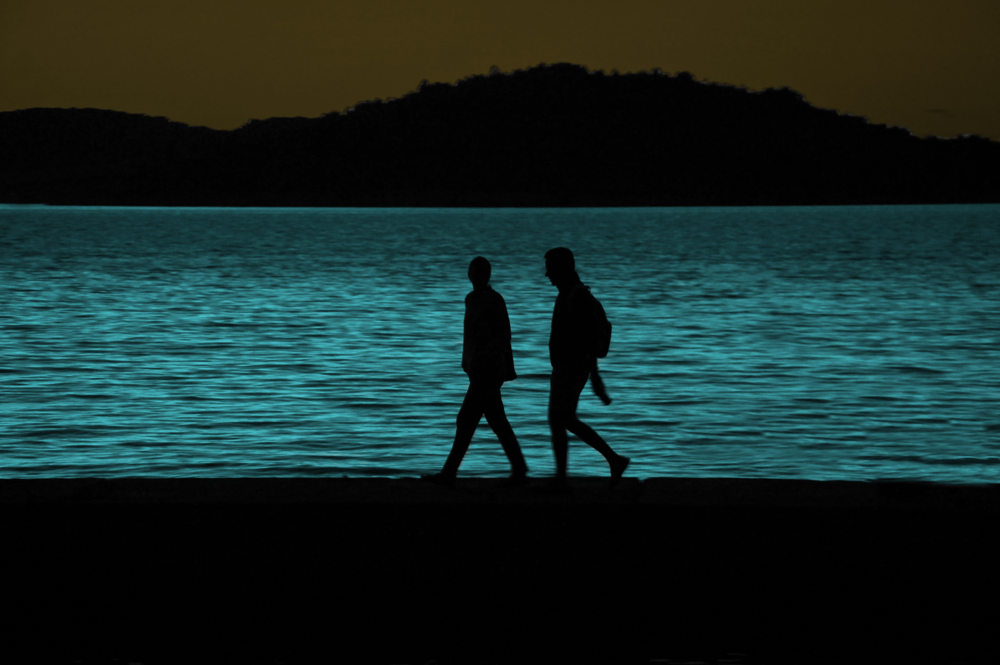
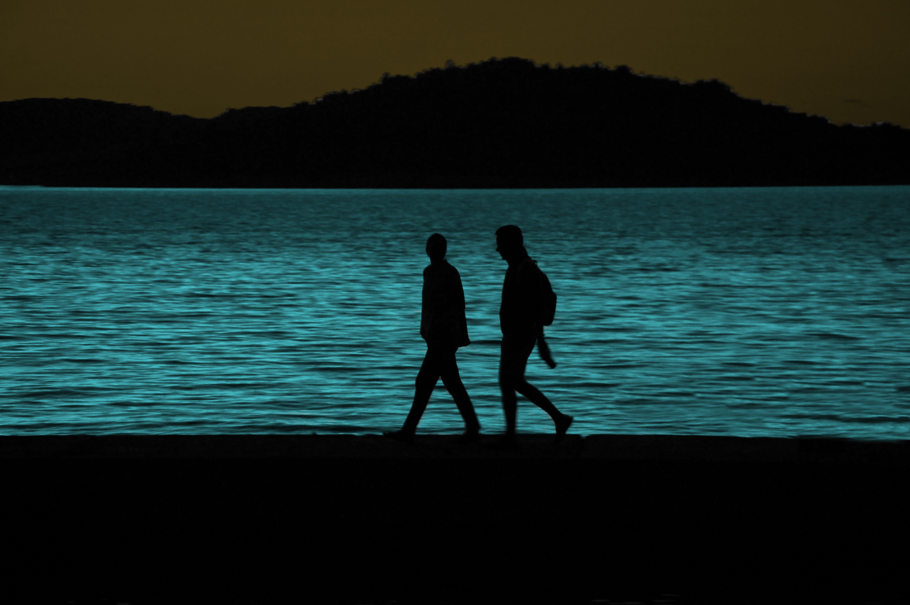

Upotreba više varijacija kolorizacije na crno bijeloj fotografiji.
 

Upotreba tehnika fotomontaže na primjeru i projektnom zadatku.
Upotreba tehnika kinemagrafa na pokretnoj slici kako bih selektivno zamrznuli dijelove slike

Upotreba tehnika video montaže na primjerima s merlina